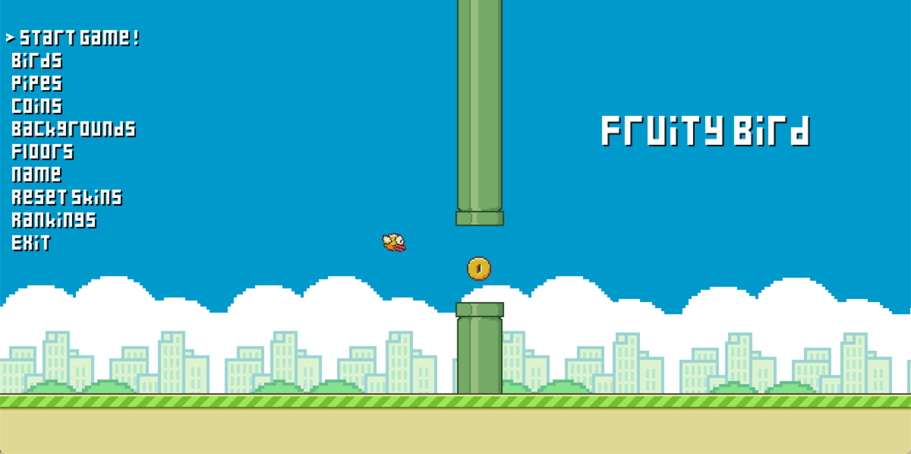

Projeto Pygame
O jogo Fruity Bird teve com referência o famoso aplicativo Flappy Bird. Seguindo a mesma lógica da nossa inspiração, o usuário é representado por um pássaro. Não somente tem o objetivo de desviar dos canos, como também de coletar moedas em sua jornada. Além disso, o personagem irá se deparar com frutas que o darão habilidades especiais, como acelerar sua velocidade, ou diminuir seu tamanho.
○ Menu ○
○ Canos ○

○ Frutas ○

Os bastidores do jogo
[ 14.04 ] Discussão de ideias e concepção do jogo;
[ 18.04 ] Criação das pixel arts a serem utilizadas no jogo;
[ 19.04 ] Movimentação do passarinho;
[ 20.04 ] Desenvolvimento da parte HTML do site;
[ 22.04 ] Implementação de classes no jogo;
[ 24.04 ] Movimentação dos canos e das moedas;
[ 25.04 ] Desenvolvimento do menu do jogo e possibilidade de escolha de skins;
[ 26.04 ] Implementação do ranking;
[ 27.04 ] Desenvolvimento da parte CSS do site.
Fruity Bird
→ Link para o download: zip do jogo
Instruções para executar o jogo
- Instale o zip pelo link acima
- Extraia-o para onde preferir
- Abra a file 'Game' pelo vs code
- Instale pygame por aqui se necessário
- Rode o jogo por clicar no ▷ do topo direito
Controles
- ↑ e ↓: Navegar menu
- Enter ou Espaco: Confirmar
- Esc: Voltar para o menu principal
- W, Espaco ou ↑: Pular
Gameplay
→ Gameplay da build mais recente do jogo:
Equipe de desenvolvedoras
Julia Karine Peres e Livia Tanaka